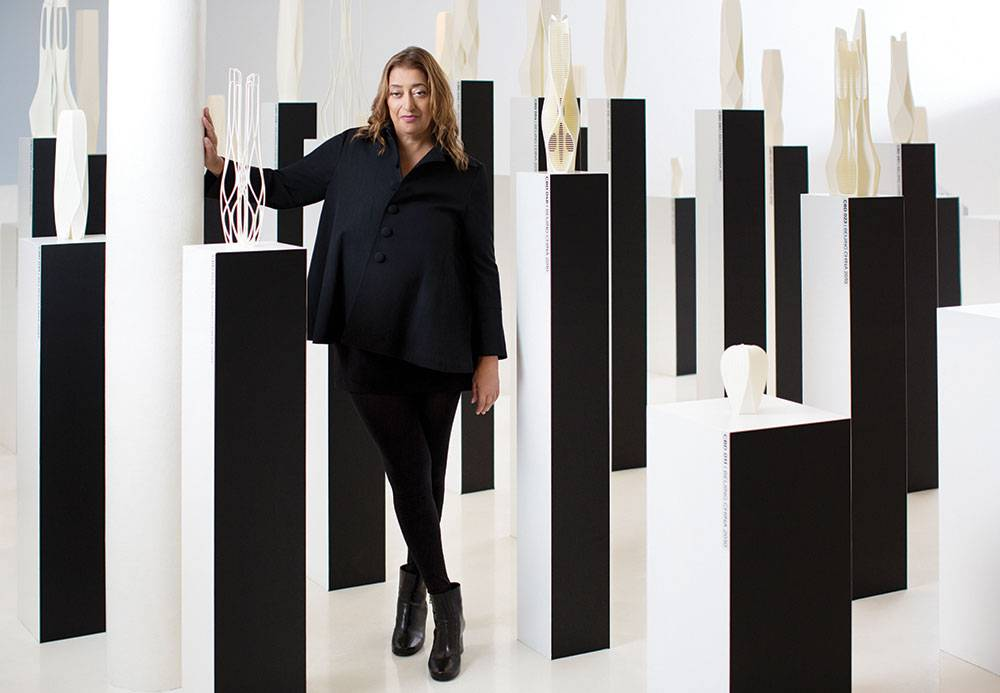

"Zaha Hadid ... The Iron Woman ”
Leaders History Will Not Forget.
A strong-willed woman who does not recognize borders. She roamed the world with an unbending determination in the plains or at the mountains. She resolved the difficulties and became today one of the pioneers of a self-sustaining architectural school. She dazzled the world with her creativity after she left her mark in the art of modern architecture.
“ who is she Zaha Hadid ؟ ”
Zaha Hadid Was Born In Baghdad Iraq (1950) And Commenced Her College Studies At The American University In Beirut In The Field Of Mathematics. She Moved To London In 1972 To Study Architecture At The Architectural Association And Upon Graduation In 1977, She Joined The Office Of Metropolitan Architecture (OMA). She Also Taught At The Architectural Association (AA) With OMA Collaborators Rem Koolhaas And Elia Zenghelis. She Began Her Own Practice In London In 1980 And Won The Prestigious Competition For The Hong Kong Peak Club, A Leisure And Recreational Center In 1983. Painting And Drawing, Especially In Her Early Period, Are Important Techniques Of Investigation For Her Design Work. Ever Since Her 1983 Retrospective Exhibition At The AA In London, Her Architecture Has Been Shown In Exhibitions Worldwide And Many Of Her Works Are Held In Important Museum Collections. Known As An Architect Who Consistently Pushes The Boundaries Of Architecture And Urban Design, Her Work Experiments With New Spatial Concepts Intensifying Existing Urban Landscapes And Encompassing All Fields Of Design, From The Urban Scale To Interiors And Furniture. She Is Well-Known For Some Of Her Seminal Built Works, Such At The Vitra Fire Station (1993),
Most important prizes Zaha Hadid.
You are one of the first women to receive the Pritzker Prize in Architecture in 2004.
She was awarded the Order of the British Empire, the Japanese Imperial Medal in the year 2012
She was awarded the Royal Gold Medal at the RIBA Prize for Engineering in 2016, becoming the first woman to receive it
Top 6 Revolutionary Projects by Zaha Hadid Architects.
The Qatar FIFA World Cup Stadium.
Although not yet completed, this is a project which promises an amazing design and a revolutionary look. The stadium will be located in Qatar. about the project in the near future.
The King Abdullah Financial District Metro Station.
Another impressive project which will soon become reality is the King Abdullah Financial District Metro Station. Located in Riyadh, Saudi Arabia, the building will respond to the demands brought by the expanding population of the area. The station will have six platforms over 4 public floors as well as two levels of underground parking.
The Heydar Aliyev Center
Located in Baku, Azerbaijan, the Heydar Aliyev Center occupies an area of 101801 square meters. It was designed to become the primary building for cultural programs in the country and it has a design very distinct from everything else.
The One Thousand Museum Tower.
Located in downtown Miami, the tower is 215 meters high and it’s a very graceful skyscraper. The 60-story condominium has a prominent concrete exoskeleton and it comprises 83 condos ranging from 5400 to 11000 square feet.
The Messner Mountain Museum..
Located in South Tyrol, Italy, this is the 6th and final Messner Mountain Museum and it was designed by Zaha Hadid Architects. The project will be completed in the summer of 2014. What’s unique about it is that the building is embedded within Mount Kronplatz
The CMA CGM Headquarters.
Located in Marseille, France, this impressive structure is the first tower that was built by Zaha Hadid Architects. It;s famous for its vertical form and is disparate volumes. The design chosen is definitely dramatic.